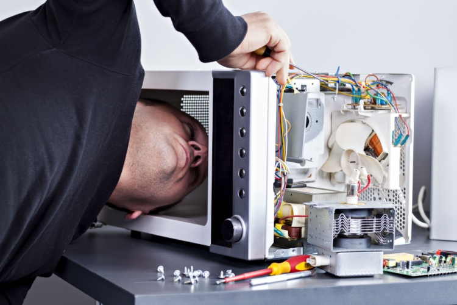
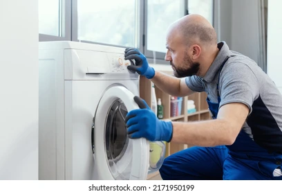
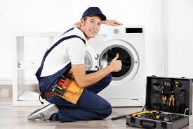

Electrodomésticos

Roberto Vázquez
Especialista en heladeras, freezers y cámaras frigoríficas. Reparación y mantenimiento de sistemas de refrigeración.

Juan Herrera
Experto en reparación de lavarropas y secarropas. Servicio técnico oficial de las principales marcas.

Miguel Ángel Soto
Técnico matriculado en climatización. Instalación, reparación y mantenimiento de aires acondicionados.
Carlos Mendoza
Especialista en cocinas y hornos. Reparación de electrodomésticos a gas y eléctricos. Instalaciones seguras.
Luis Romero
Reparación de hornos microondas y pequeños electrodomésticos. Diagnóstico preciso y soluciones rápidas.
Alejandro Paz
Técnico multimarca con 15 años de experiencia. Especialista en todo tipo de electrodomésticos y línea blanca.